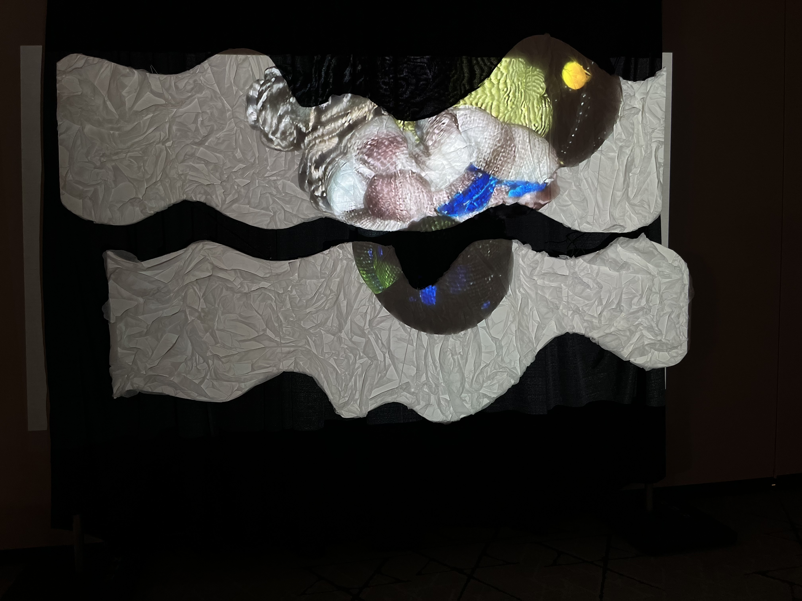

COLLEGE OF DUPAGE FASHION SHOW PROJECTIONS 'EUPHORIA'
These abstract interactive shapes, with patterns taken from garments in the College of DuPage Fashion Show, create a meta experience. Using Cinema 4D these abstract shapes act like fabric colliding into each other swiftly. Euphoria in Greek means "I'm bringing something good.” This was the intention for the show adding to the fashion show experience bringing movement and energy into the space.
The Sculpture and Music is influenced by sea waves and indie music created by Philio Milioti.